"The Alot is Better Than You at Everything"
"As a grammatically conscientious person who frequents internet forums and YouTube, I have found it necessary to develop a few coping mechanisms. When someone types out "u" instead of "you," instead of getting mad, I imagine them having only one finger on each hand and then their actions seem reasonable. If I only had one finger on each hand, I'd leave out unnecessary letters too!"
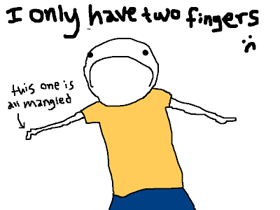"If I come across a person who seems to completely ignore the existence of apostrophes and capital letters and types things like "im an eagle and im typing with my talons, so dont make fun of me cuz this is hard," I like to imagine that they actually are an eagle typing with their talons. It would be a hassle if you had to hop in the air and use your feet to karate-chop two keys simultaneously every time you wanted to use the shift key to make a capital letter. Also, eagles lack manual dexterity, so I can understand why they'd want to leave out apostrophes. Eagles are all about efficiency."

"But there is one grammatical mistake that I particularly enjoy encountering. It has become almost fun for me to come across people who take the phrase "a lot" and condense it down into one word, because when someone says "alot," this is what I imagine:"

"The Alot is an imaginary creature that I made up to help me deal with my compulsive need to correct other people's grammar. It kind of looks like a cross between a bear, a yak and a pug, and it has provided hours of entertainment for me in a situation where I'd normally be left feeling angry and disillusioned with the world."
"For example, when I read the sentence "I care about this alot," this is what I imagine:"
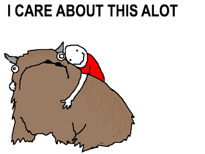"Similarly, when someone says "alot of _______", I picture an Alot made out of whatever they are talking about."
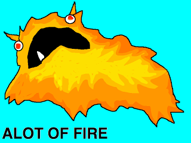 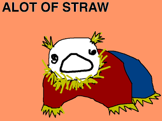
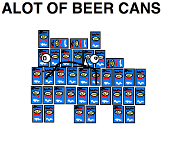
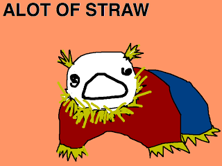
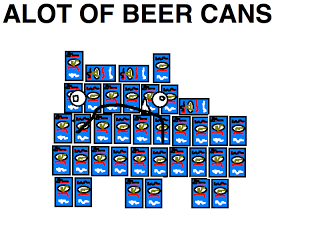
"If someone says something like "I feel lonely alot" or "I'm angry alot," I'm going to imagine them standing there with an emo haircut, sharing their feelings with an Alot."
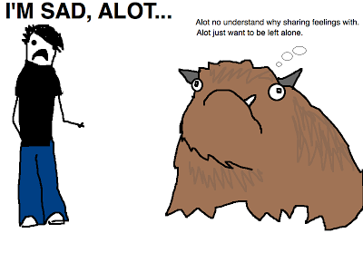"The Alot is incredibly versatile."
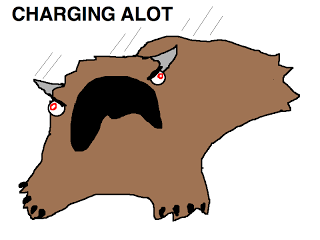 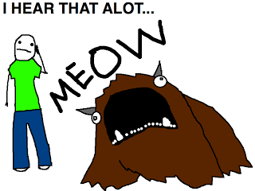 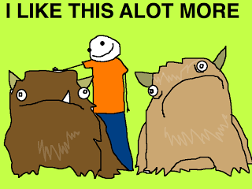 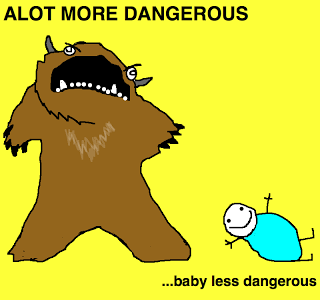'So the next time you are reading along and you see some guy ranting about how he is "alot better at swimming than Michael Phelps," instead of getting angry, you can be like "You're right! Alots are known for their superior swimming capabilities."'
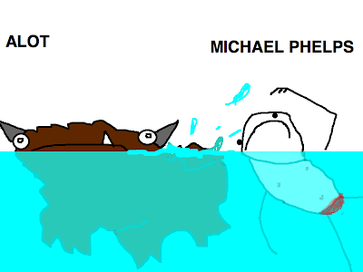